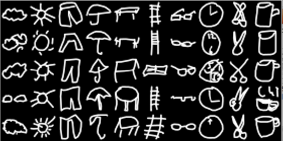
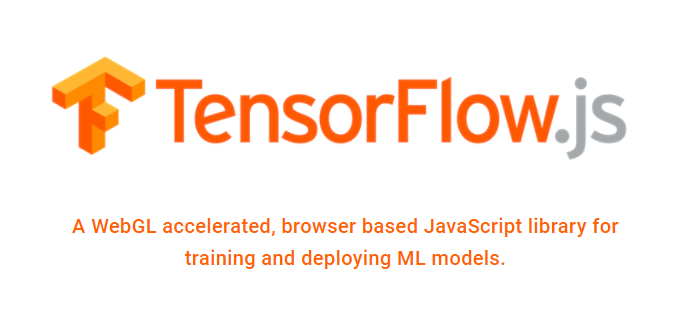
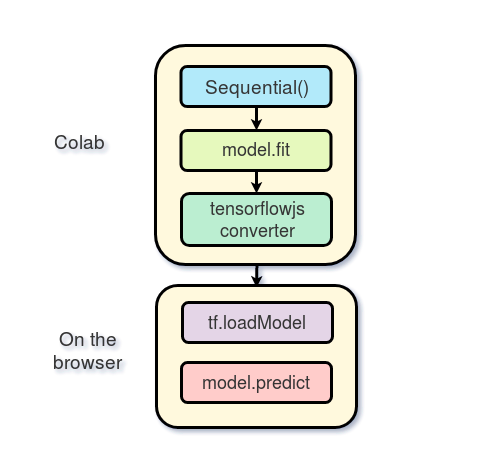
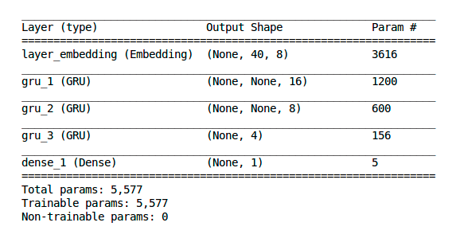
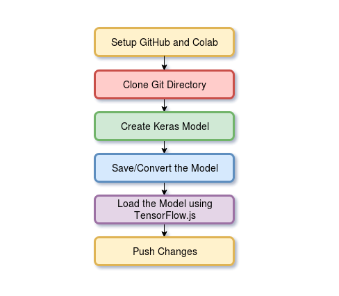
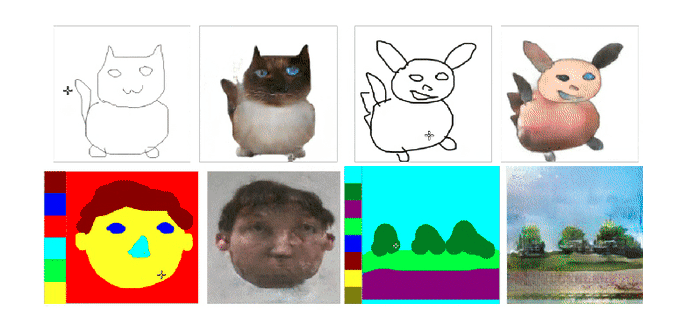
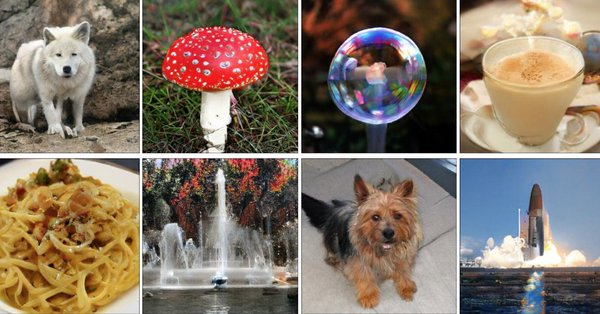
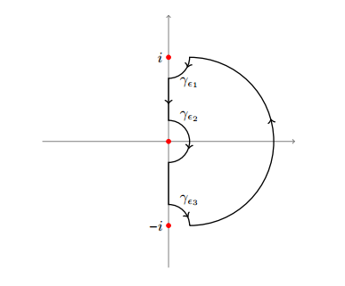
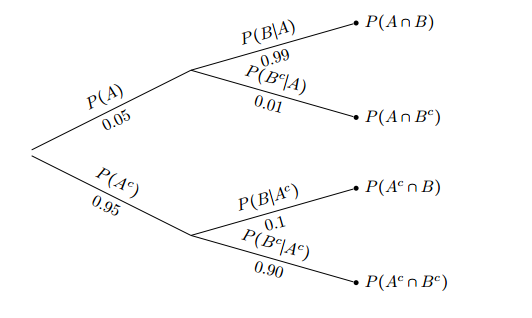

My Name is Zaid Alyafeai from YEMEN. I am a Master student at KFUPM in Saudi Arabia. I work on machine learning and its applications in computer visions. I like to create my own projects and try to solve them using deep learning. I also like to write about deep learning mainly tutorials or notebooks with code. I am mostly active on twitter @zaidalyafeai. I am open to speaking on conferences or work on part-time projects.
The main purpose of this project is to create a web applications for quick image to image translation. The implementation is based on the paper "Image-to-Image Translation with Conditional Adversarial Networks" by Philip Isola, et al. . The user can draw a sketch or a semantic map to the left and the application will render it to a real image on the right canvas. The model was trained using Tensorflow and converted to a web application using Tensorflow.js.
The main purpose of this project is to design an application to make face segmentation directly from the webcam. The basic model is a U-Net model extracted from pix2pix trained on this faces dataset. To make sure that the model runs in real time the model was trained with less parameters and more augmented dataset.
In this project the model takes live feed from the webcam and tries to reconstuct the original image. It is based on two models. The first model is based on the face semgnetation project; so basically it creates face segmentation. The second model was trained on a celebrity dataset where the input is a segmented face and the output is a celebirty face.
This projects is designed to recognize drawings in real time. The user draws a shape in the canvas and the model will predict the top 5 objects that match the drawing. It was trained on 100 classes taken from the quick draw dataset by Google creative lab.
This project is designed to recognize latex symbols in real time. The user draws a shape in the canvas and the model will predict the top 5 symbols that match the drawing. It was trained on 369 classes taken from the HASY dataset.
This projects implements 5 pretrained fast style transfer models. The web model was converted from these keras models. The keras implementation is based on the paper Perceptual Losses for Real-Time Style Transfer and Super-Resolution by Justin Johnson, et al.
I trained a pix2pix model to learn a style transfer on portrait images. First the dataset is generated by using this model. We save the image and its styled pair and we input it into a pix2pix model. The dataset contains around 700 celebrity images.
This dataset was collected by Google from people drawing different objects. The dataset is a collection of 50 million drawings from 345 different objects that is available publically for everyone. We extract a simple subset of 10 classes of the dataset for simple machine learning tasks. The dataset is suggested as an alternative for MNIST.
A complete walk-through on how to create machine learning models in the browser. The new Tensorflow.js library from Google opens new possibities for developers to start training and deploying machine learning models using javascript. I start by explaining the basic blocks of the language then I devele deep to explain how to create models and load pretrained ones.
In this tutorial I explain how to train a model in colab with tf.keras then deploy it in the browser with Tensorflow.js. Colab from google allows training on GPU and TPU for free for around 12 hours.
In this tutorial I explain how to make a sentiement classification in keras then deploy it in the browser using Tensorflow.js. The RNN model is trained on a movie review dataset that classifies bad/good movies from text inputs. The model is designed with keras and converted to a web model using Tensorflow.js.
In this tutorial I explain how to create a Notebook on google colab. The notebook explores the possiblitiy of training, testing and deploying a model a model in the browser without leaving the notebook. I also explained how to post the project on GitHub directely from Colab using tokens.
In this tutorial I explain how I created the fast pix2pix application. It gives a compete walk-though of training then porting the model to the browser.
An article featuerd in the Gradient publication about using state of the art image generation method (BigGan) to create art. It featuers many people's work with BigGan and also included my work on different experiemnts to explain the latent space of such powerful GANs.
This notebook shows a simple pipeline for training pix2pix on a simple dataset.
This notebook shows how to train, test then deploy models in the browser directly from one notebook. We use a simple XOR example to prove this simple concept.
Google recently allowed training on TPUs for free on colab. This notebook explains how to enable TPU training. Also, it reports some benchmarks using mnist dataset by comparing TPU and GPU performance.
This notebook shows to create a custom data genertor in keras.
As we know that TenosrFlow works with static graphs. So, first you have to create the graph then execute it later. This makes debugging a bit complicated. With Eager Execution you can now evalute operations directly without creating a session.
In this notebook I explain different concepts in eager execution. I go over variables, ops, gradients, custom gradients, callbacks, metrics and creating models with tf.keras and saving/restoring them.
Create a simple app to recognize 100 drawings from the quickdraw dataset. A simple CNN model is created and served to deoploy in the browser to create a sketch recognizer app.
In this notebook we provide QuickDraw10 as an alternative for MNIST. A script is provided to download and load a preprocessed dataset for 10 classes with training and testing split. Also, a simple CNN model is implemented for training and testing.
Autoencoders consists of two structures: the encoder and the decoder. The encoder network downsamples the data into lower dimensions and the decoder network reconstructs the original data from the lower dimension representation. The lower dimension representation is usually called latent space representation.
In this tutorial we explain how to transfer weights from a static graph model built with TensorFlow to a dynamic graph built with Keras. We will first train a model using Tensorflow then we will create the same model in keras and transfer the trained weights between the two models.
Create some cool gifs by interpolation in the latent space of the BigGan model. The model is imported from tensorflow hub.
In this notebook I give a basic introduction to bigGans. I also, how to interpolate between z-vector values. Moreover, I show the results of multiple experiments I made in the latent space of BigGans.
In this notebook a pretrained Mask R-CNN model is used to predict the bounding box and the segmentation mask of objects. I used this notebook to create the dataset for training the pix2pix model.
A notebook exploring the drawing data of quickdraw. I also illustrate how to make a cool animation of the drawing process in colab.
The U-Net model is a simple fully convolutional neural network that is used for binary segmentation i.e foreground and background pixel-wise classification. In this notebook we use it to segment cats and dogs from arbitrary images.
A simple CNN with a regression branch to predict bounding box parameters. The model is trained on a dataset of dogs and cats with bounding box annotations around the head of the pets.
A book exploring different approaches to solve advanced integrals. In this book I gather many special functions like, gamma, beta, zeta, hypergeometric, etc .. and explore the analyticity of such functions. Also, I use complex analysis approaches to solve some advanced integrals that are unsolvable by elementary approaches.
A summary of the probability course by MIT.
WebGL coding to sport tensors rank 5 in Tensorflow.js. This opens the possiblity of for training, predicting models with 4 dimenional inputs.
This layer is very important to implement many models like auto-encoders.
I translated the linear algebra document of the cheatsheet by Stanford to Arabic.
In this presentation at Sharqiah Data Geeks I talk about depoloying machine learning models in the browser with TensorFlow.js. I show a case study of recognizing drawings directly in the browser. I also I show a couple of interesting projects that are done with TensorFlow.js.